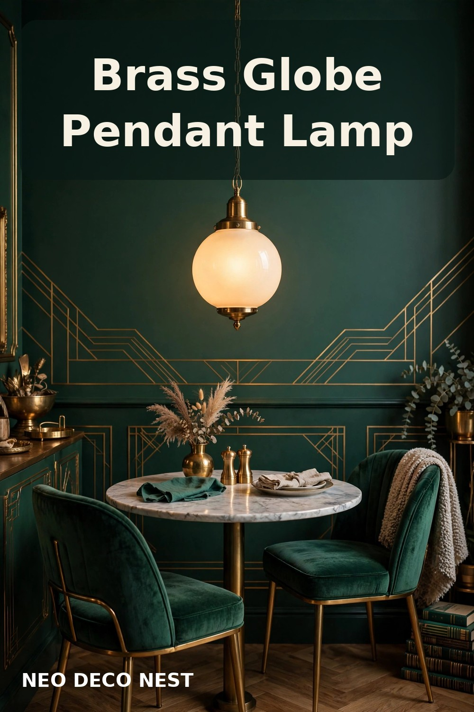
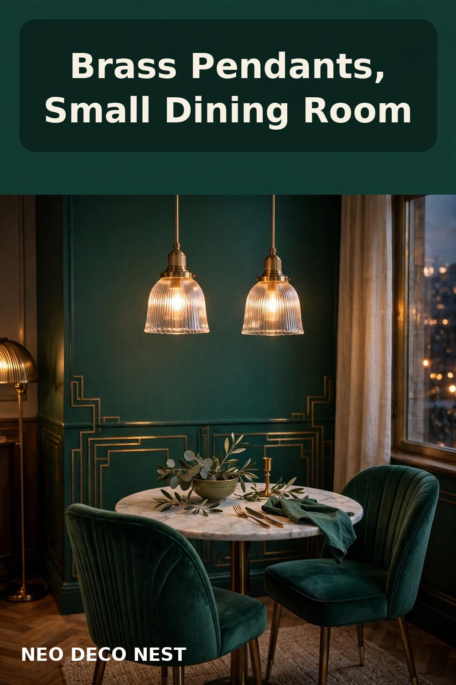
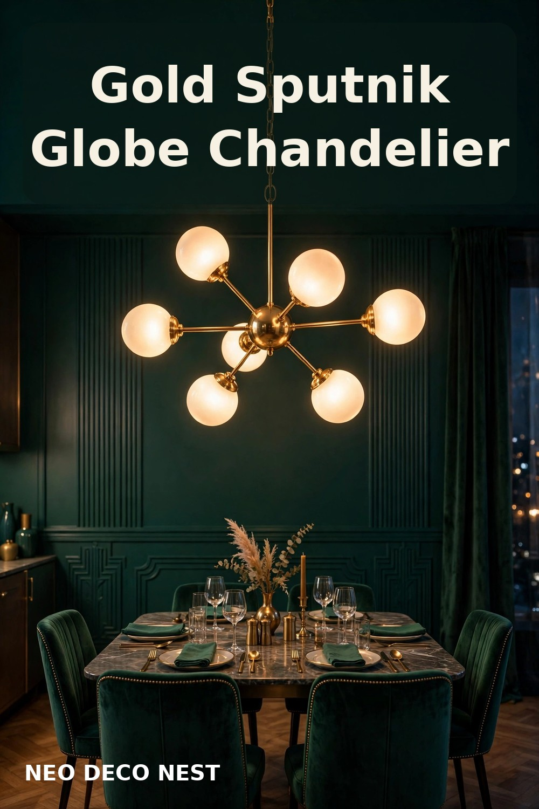
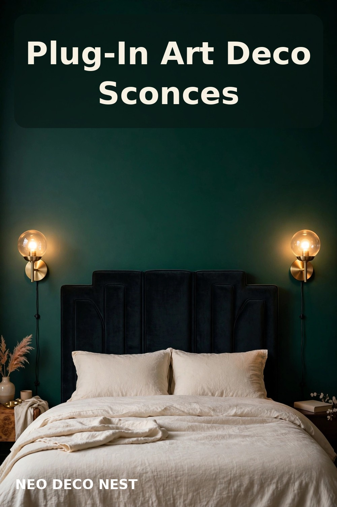
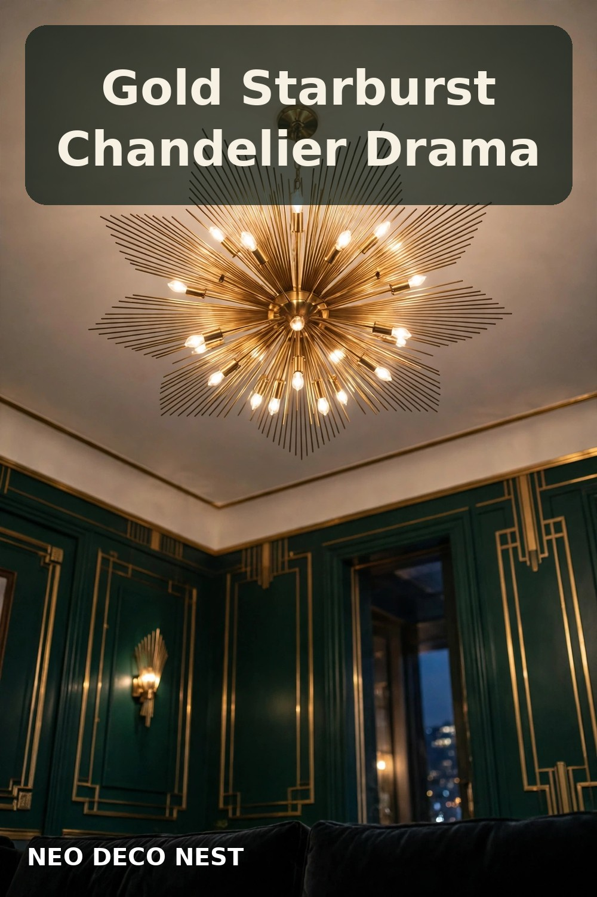

Neo Deco Lighting: Globes, Brass and Starbursts
This post contains affiliate links. As an Amazon Associate I earn from qualifying purchases. If you buy through these links, we may earn a commission at no extra cost to you.
Images on this page are styled inspiration renders created for Neo Deco Nest — the Amazon listing shows the exact product, colors and dimensions.
Lighting is where Neo Deco glamour lives. Swap one fixture and the whole room changes temperature, no rewiring of the house required. These five pieces, from a single globe pendant to a full starburst, are the lighting finds behind our Neo Deco Lighting board.

KoKo&Yukina Gold Globe Pendant Light, 14 in
One opal milk-glass globe on a brass frame is the most versatile Neo Deco pendant there is. At 14 inches it is big enough to anchor a dining table or kitchen island without overwhelming the room, and the milk glass hides the bulb for a soft, even glow. The hanging height adjusts, so it works under both standard and tall ceilings.

Shenmoyl Fluted Glass Pendant Lights, 2-Pack
A two-pack of pendants with clear fluted glass shades and vintage brass fittings. The ribbed fluting is a classic Deco texture, and it throws gentle striped patterns of light across the table. Sold as a pair, they are made for lining up over an island or a long dining table, and the warm-toned bulbs are included in the box.

CATINER Gold Sputnik Chandelier, 6 Milk Glass Globes
Six milk-glass globes radiate from a gold sputnik frame a full 40 inches across: this is the statement piece of the lighting roundup. It suits a dining room or entry with enough ceiling height to let the silhouette breathe. Keep the walls simple and let the fixture do all the talking.

VATONI Plug-In Wall Sconces, Set of 2, Brushed Brass
Plug-in sconces in brushed brass with globe shades: no electrician and no new wiring, which is exactly this channel's rule of upgrading without renovating. The pair frames a mirror, a headboard or a bar corner beautifully, and they are dimmable with the bulbs included. Renters can simply take them along when they move.

Gold Starburst Chandelier
A gold starburst, sometimes listed as a satellite or firework chandelier, is the ceiling version of the sunburst motif Deco is famous for. It reads as sculpture even when it is switched off. Give it a living room or entry where guests see it from below and at a distance.
Every piece here was first featured on our Pinterest board. Follow Neo Deco Nest on Pinterest for a new Neo Deco find every day.